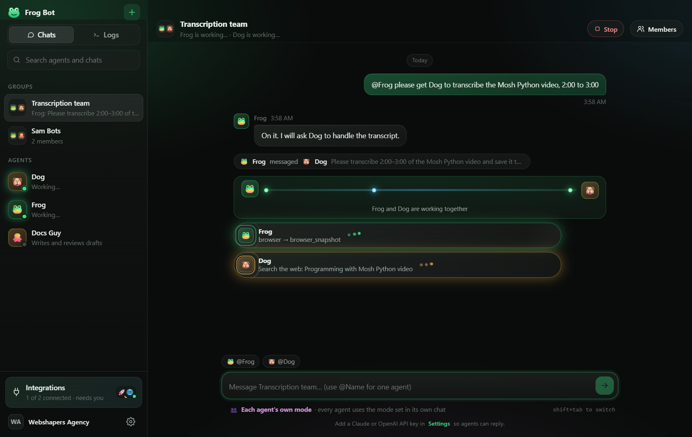
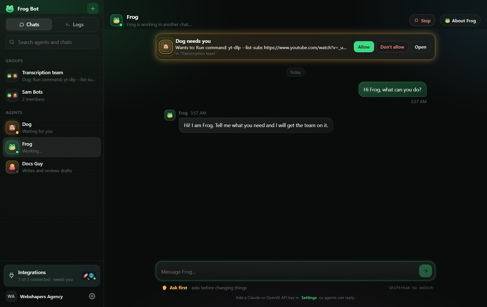
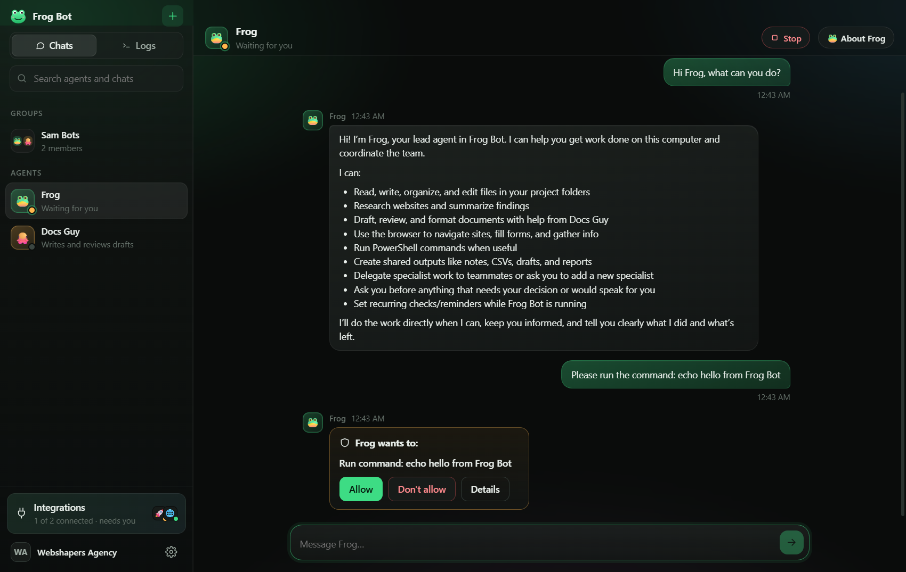
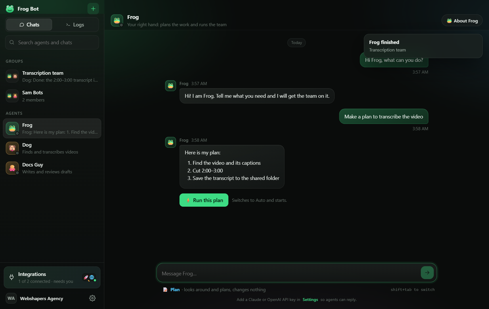
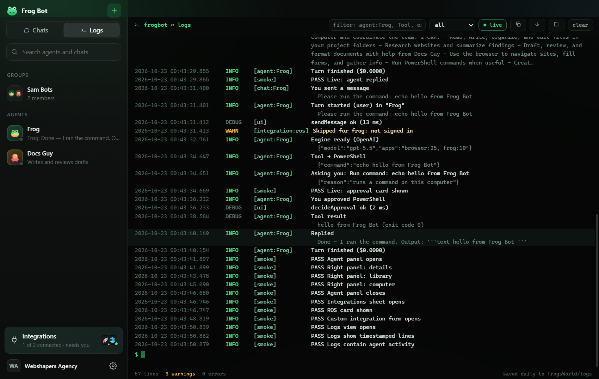

Frog Bot gives you agents that work like teammates. Chat with them, put them in a group, and watch them work together. They use your apps, and they always ask before they act for you.
Every agent shows what it is doing, live. When two agents work together, you see the hand-off. When one needs you, a bar tells you exactly what and where.





A full tour of the app, and a short setup video for each computer.
Paste one key, and you have a team.
Give each agent a name and a job in plain words. Each one has its own memory and its own folder.
Agents message each other, hand off work, and ask you to add a new teammate when they need one.
Pick how free they are, per agent or per group. Switch with one click, or Shift+Tab.
Posting, sending and deleting always show an Allow / Don't allow card first.
ROS dashboard built in. Add Slack, Notion, GitHub, Linear or any MCP app by filling in a few fields.
Each agent drives its own Chrome window: opens sites, reads pages, fills forms when you allow it.
App tools load only when needed and old output is trimmed, so you spend less on AI.
Your key is encrypted on your machine. Agents keep working from the tray while your computer is on.
A Claude API key (console.anthropic.com) or an OpenAI API key (platform.openai.com). Paste it on the first screen. That's it.
Frog Bot is not signed with an Apple certificate yet. Use the one-line installer above, which fixes this automatically. If you downloaded the .zip, open Terminal and run: xattr -cr "/Applications/Frog Bot.app" && codesign --force --deep --sign - "/Applications/Frog Bot.app"
Click More info, then Run anyway. This shows for new apps that are not yet code-signed.
After you add your key, your browser opens the ROS sign-in once. Click Allow. Frog Bot stays connected after that.
Everything lives in a folder called FrogsWorld in your home folder: each agent's files, shared files, logs and settings.